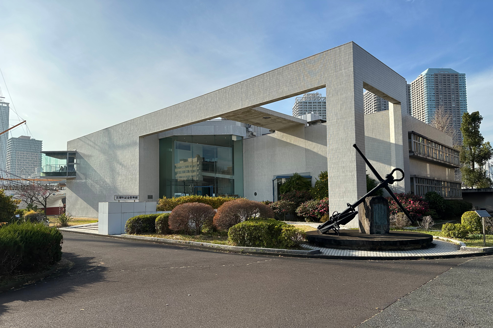

🌸東京海洋大学に進学する富山県出身者のための男子学生寮
青雲寮（せいうんりょう）は、東京都府中市にある富山県出身の男子大学生専用の学生寮です。月額約5.1万円（居住費3万円＋食費1.6万円＋負担金0.5万円）という破格の料金で、食事付き、個室完備、セキュリティも万全な環境で、安心して大学生活を送ることができます。
港区・江東区の高家賃に悩む富山県出身の方へ。
「乗船実習で部屋を空けるのに家賃が重い」「早朝の授業や実験で栄養面が心配」
青雲寮なら固定費を抑え、実習・資格勉強に集中できます。
入寮時特待生制度について
富山県学生寮では、新入寮生を対象とした「入寮時特待生制度」を実施いたします。選考により特待生に認定された方には、入寮費（5万円）と1年目の寮費半額（18万円）の合計23万円が免除（返金）されます。
詳細は入寮生の募集についてをご覧ください。
🏠 格安の寮費
月額約5.1万円（居住費3万円＋食費1.6万円＋負担金0.5万円）。東京の一人暮らしと比べて圧倒的にお得！
🍱 栄養満点の食事
朝夕2食付き。栄養バランスの取れた温かい食事を提供
🔒 安心のセキュリティ
24時間管理体制で、初めての東京生活も安心
🚃 好立地
府中市の閑静な住宅街。都内主要大学へアクセス良好
✨東京海洋大学の通学アクセスと費用比較で選ばれる理由


🚇 通学時間・アクセス
品川キャンパス約65〜80分、越中島約75〜90分。乗換少なめで時間を読みやすいルートです。
💰 費用差を実習・資格へ
家賃7〜10万円圏と比べ、寮費＋食費込みで月7万円前後の差。乗船実習・海技士試験・TOEICに投資できます。
🤝 同郷コミュニティ
富山県出身の先輩と海事業界の情報交換がしやすい。上京初期の不安を相談できます。
📚 学習環境
個室・Wi-Fi・学習室完備。朝夕2食で体調を整え、長時間の実習や研究に備えられます。
🚇通学アクセス詳細
品川キャンパス
ルート: 東府中 → 新宿（京王線） → 品川（山手線） → 徒歩10分
所要時間: 約65〜80分
特徴: 乗換1回でシンプル。朝は新宿・山手線が混雑するため早めの出発が安心です。
越中島キャンパス
ルート: 東府中 → 新宿（京王線） → 東京（中央線） → 越中島（京葉線系統） → 徒歩
所要時間: 約75〜90分
特徴: 東京駅乗換は距離があるため時間に余裕を持つと安心です。
💴費用比較（一人暮らし vs 青雲寮）
港区・江東区周辺で一人暮らしをする場合と、青雲寮に入寮した場合の家賃（月額）比較です。
一人暮らし
（個室）
※ 品川・越中島周辺のワンルーム相場（管理費込）との比較例
| 項目 | 一人暮らし（品川・越中島周辺） | 青雲寮（特待生） | 備考 |
|---|---|---|---|
| 家賃（月額） | 80,000円〜 | 15,000円 | 個室・家具付き |
| 食費（月額） | 30,000円〜 | 23,000円 | 朝夕2食付き（日祝除く） |
| 光熱水費 | 10,000円〜 | 寮費に含む | |
| 通信費 | 5,000円〜 | 寮費に含む | Wi-Fi完備 |
| 月額合計 | 125,000円〜 | 36,000円 | 毎月約8〜9万円の差！ |
📖寮生活のイメージ


タイムスケジュール例
- 06:30 起床・朝食（早朝実習の日も栄養を確保）
- 07:20 通学（京王線で新宿経由）
- 09:00 授業・実験
- 12:00 昼食（学食や周辺で）
- 13:00 実験・乗船実習準備・英語学習
- 18:00 帰寮・夕食
- 20:00 個室で海技士・TOEIC対策
- 23:30 就寝
🧭東京海洋大学の寮・一人暮らしを考える保護者・受験生・高校生へ
東京海洋大学は品川・越中島の2キャンパス構成で、乗船実習など海洋系特有の長期不在期間があります。青雲寮なら実習期間中も拠点として活用でき、不在期間も固定費（家賃）が低く抑えられるのが大きなメリットです。
キャンパス情報や大学寮制度は更新があるため、大学公式サイトもあわせて確認してください。
保護者が確認したい点
乗船実習で不在になる期間も家賃がかかり続けるのが一人暮らしの難点です。青雲寮なら実習期間中も寮を拠点にでき、食費・光熱費込みで月額5.1万円と固定費が低く抑えられます。海技士試験・TOEIC・実習関連費への仕送りに余裕が生まれます。
受験生が比較したい点
品川・越中島周辺のワンルームは8〜10万円台が相場です。青雲寮なら毎月8〜9万円浮かせられ、4年間では350万円以上の差になる場合もあります。乗船実習費・海技士試験費・TOEICスコアアップ費に回せます。
高校生が先に知りたい点
東京海洋大学は早朝の授業・実験、長期の乗船実習など特殊な生活スタイルが待っています。食事付きの寮なら早朝出発の日も朝食を確保でき、不規則になりがちな生活でも栄養面が整います。実習中心の生活に合った住まいを受験段階から考えておきましょう。
❓よくある質問
Q. 品川キャンパスまでの通学時間は？
A. 京王線＋山手線で約65〜80分が目安です。乗換1回でシンプルなルートですが、朝の混雑を考慮して早めの出発がおすすめです。
Q. 越中島キャンパスへの通学は可能ですか？
A. 東府中から新宿（京王線）→東京（中央線）→越中島（京葉線系統）で約75〜90分です。東京駅の乗換は距離があるため時間に余裕を持つと安心です。
Q. 乗船実習期間中はどうなりますか？
A. 実習期間中も寮を拠点に荷物を置くことができます。長期不在でも固定費が低い青雲寮は、海洋系特有の生活スタイルに適しています。詳細は募集要項をご確認ください。
Q. 港区・江東区の家賃と比べてどれくらい節約できますか？
A. 品川・越中島周辺の8〜10万円圏と比べ、寮費＋食費込みで月8〜9万円浮くケースが一般的です。乗船実習費・海技士試験・TOEIC受験料に充てられます。
Q. 朝早い授業や実験に間に合いますか？
A. 早めの電車に乗れば十分間に合います。朝食付きなので早朝出発の日も栄養を確保してから出発できます。
Q. 青雲寮は東京海洋大学の公式寮ですか？
A. いいえ、公式寮ではありません。富山県出身の男子大学生向けの独立した学生寮で、東京海洋大学へ通学可能な立地にある選択肢です。
Q. 入寮時特待生制度とはどのような制度ですか？
A. 新入寮生を対象とした選考制度で、特待生に認定された方には入寮費（5万円）と1年目の寮費半額（18万円）の合計23万円が免除されます。詳細は入寮生募集ページをご確認ください。
富山県出身で東京海洋大学を目指す皆さんへ
青雲寮で固定費を抑え、実習・資格準備に集中できる環境を整えませんか？
見学も随時受け付けています。